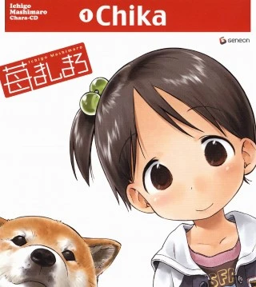
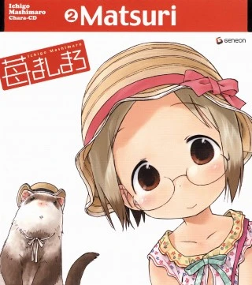
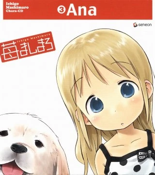
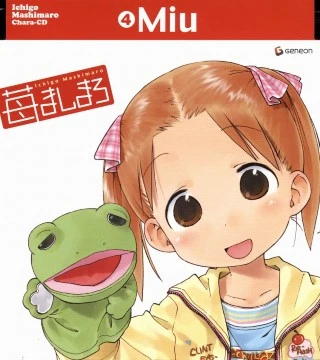

Mashimaro TV
Spotify-ish Song Preview
a short preview of the 4 main character songs from Ichigo Mashimaro Chara-CD album
🍓🍓🍓

Sore Wa Suteki Na Showtime
Saeko Chiba

Miruku O Koboshite
Ayako Kawasumi

Made In Onnanoko
Mamiko Noto

Osanpo Kyousoukyoku
Fumiko Orikasa